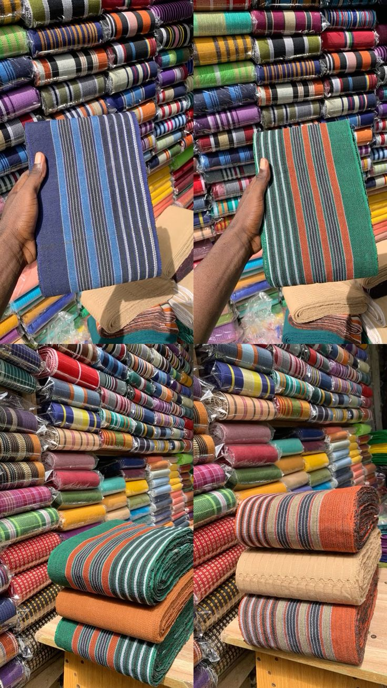
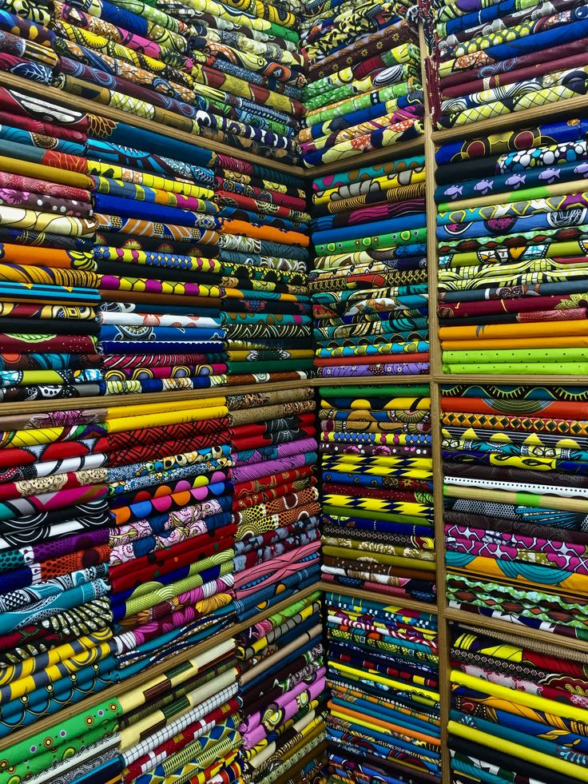
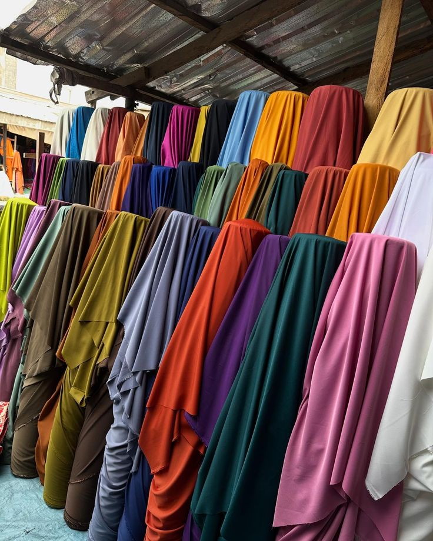
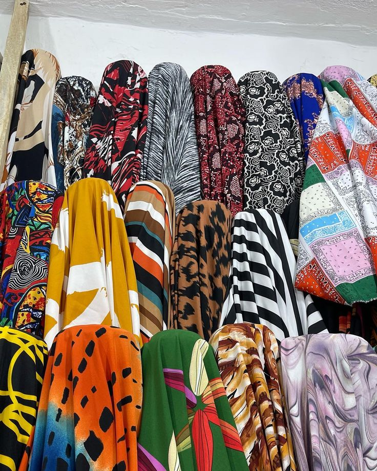
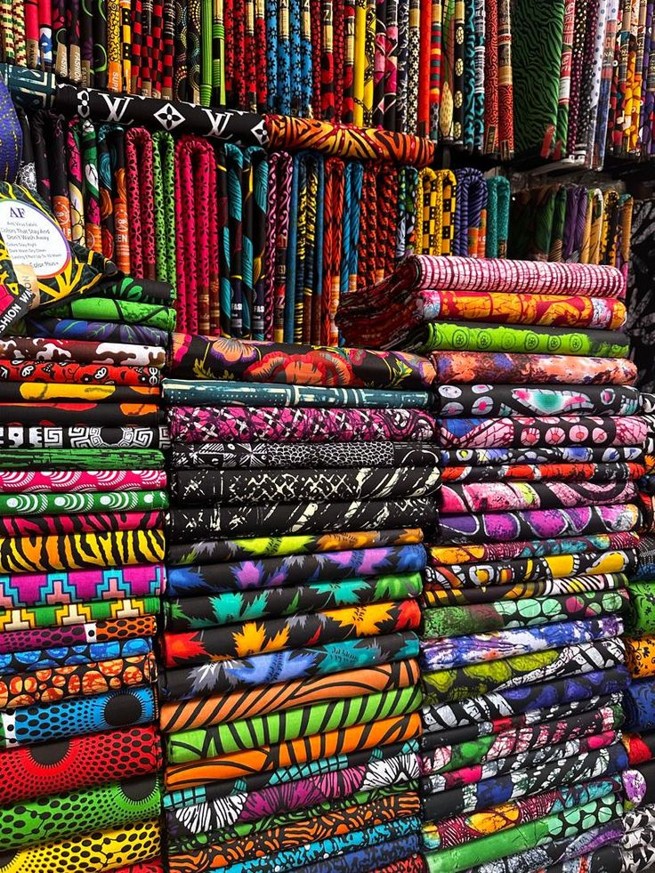

building a fashion marketplace when you're a software engineer with no fashion background is a specific kind of delusion.
but here we are. styclick exists because i saw a problem. not because i have fashion expertise. because i saw the way people — especially nigerians — relate to clothing and tailoring and realized the current infrastructure is basically non-existent. you have tailors who are brilliant but have no way to reach customers beyond word of mouth. you have people who want specific things made but no way to find the right craftsperson. the whole thing is inefficient in a way that a market could absolutely fix.
the recent work has been heavy on the design side. the warm editorial system is finally feeling right. the aesthetic is coming together. it feels like something people would actually want to spend time in, not just a transactional app where you're getting in and getting out. but building this while running blue particle and doing the arguuu work and being a student is genuinely the most stretched i've ever been.





some days i love styclick. i get into the detail work and it feels right. the color palettes. the typography. the way the ui flows. there's something about fashion and design that makes sense to my brain in a way that's distinct from the activation required for arguuu.
other days i resent it because it's the thing i'm not working on when i should be. it's the resource black hole that keeps me from having a regular sleep schedule. but the market is real. the need is real. and i'm the only person i know who is going to build it. so i keep showing up to styclick even when arguuu is screaming for attention.
either way styclick is becoming real. one sprint at a time.
← Back to Blog